Walkthrough refinements
October 13 · Synthetic preview data only · Browser verified, not installed on the frame.
Appearance: choices at their natural size
Compact segmented controls, icons for colour mode and text size, icons throughout Settings navigation, and miniature theme layouts that follow light or dark mode.
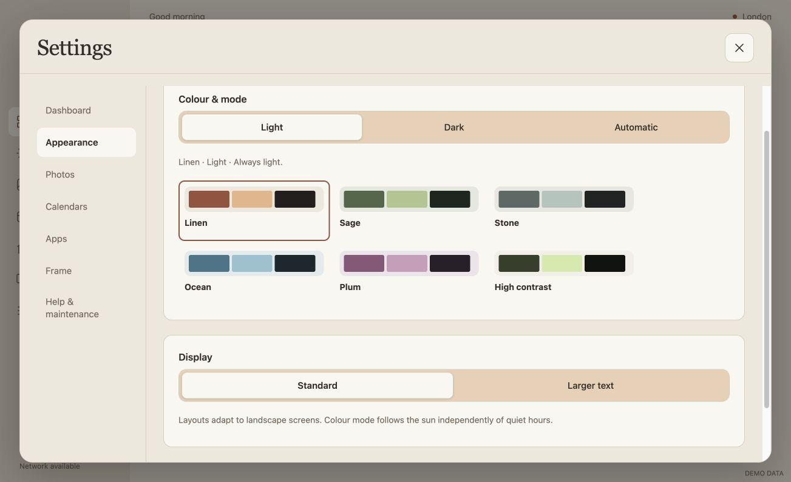
Before · captured during the walkthrough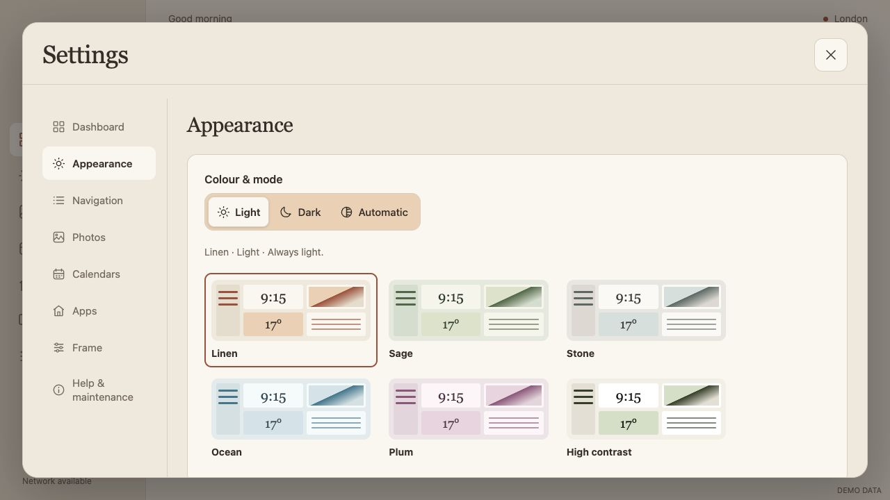
After · 1280 × 720 CSS pixelsDashboard: move and resize directly
Dragging over another widget exchanges their slots when both fit. Four small square corner handles retain generous touch targets and anchor the opposite corner, including keyboard resizing. The unrelated toolbar shortcuts are removed.
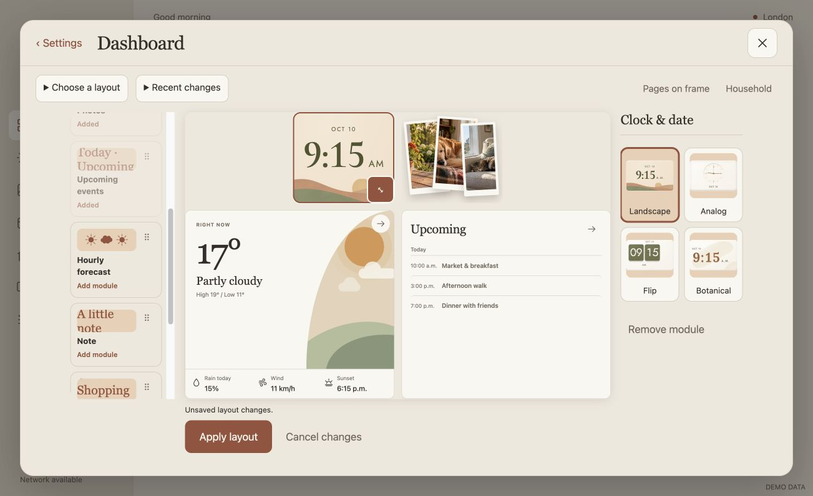
Before · overlap rejection and large resize button After · corner handles and illustrated palette
After · corner handles and illustrated paletteSwaps exchange size as well as position. Incompatible minimum sizes are rejected. Adding a new widget still requires free space; this pass does not introduce automatic rearrangement of multiple widgets.
A visual widget palette
Miniature representations replace text placeholders. Unconfigured utilities use sample content; photo previews use the current gallery. The drag preview carries the same illustration.
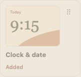
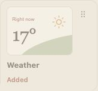
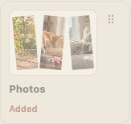
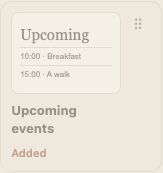
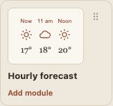
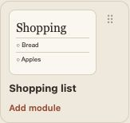
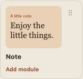
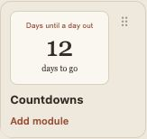
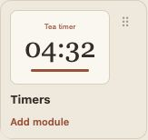
Navigation has its own home
A primary Settings destination controls optional Home, YouTube and Household sidebar pages. The photo favourites preference is now with photo order and collections. Household content remains reachable from Dashboard settings, outside the editing toolbar.

Responsive review
Landscape canvases follow the current screen. A narrow browser uses a scaled landscape canvas so widget positions and handles remain aligned.
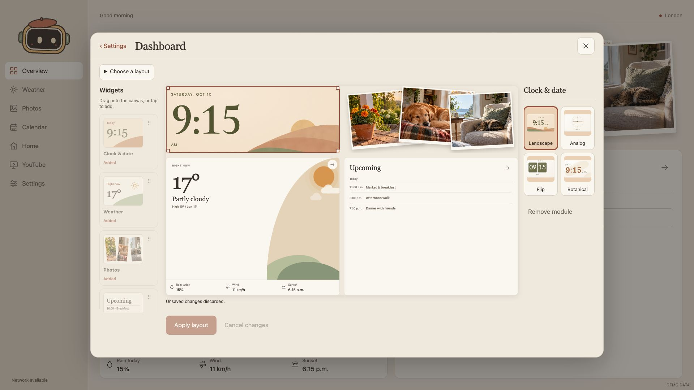
1920 × 1080 desktop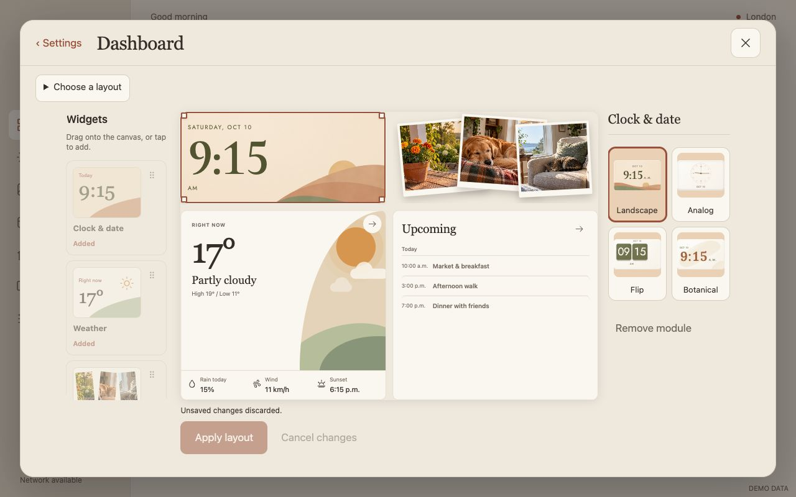
1280 × 800 · 16:10Narrow fallback
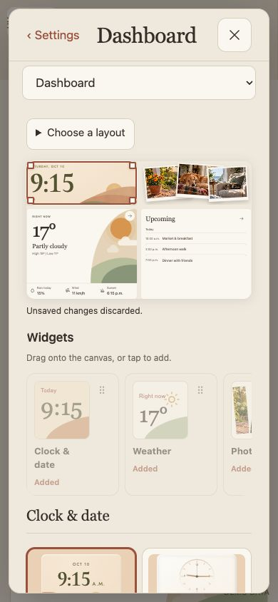
Verification
90 Node tests, 19 Python tests, 13 Settings workflow groups, pointer swap, all four opposite-corner resize anchors, keyboard corner anchoring, compact control sizing, navigation routing and responsive geometry passed. TypeScript and formatting checks pass. Public source/history scan: zero findings.
No frame installation or physical touch acceptance is claimed. Restart your local preview to load these source changes.